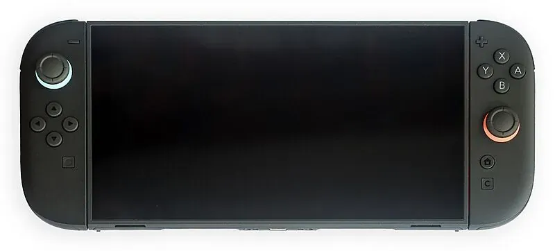

2025 年发布
Nintendo Switch 2
次世代混合主机 · 4K输出 · 磁吸Joy-Con · 向下兼容
4K
TV分辨率
8寸
屏幕尺寸
$449
首发价格
2025
发布年份
📖 历史与背景
Nintendo Switch 2于2025年正式发布，是任天堂在Switch取得全球1.4亿台销量后的次世代产品。自2017年Switch上市以来，玩家和业界一直翘首以盼任天堂的后续主机——Switch的生命周期已超过8年，远超传统主机的5-7年周期。
Switch 2延续了Switch的核心设计理念——家用机与掌机的二合一形态。但带来了全方位的性能升级：支持4K分辨率的TV输出、更大的8寸屏幕、磁吸式Joy-Con连接（取代了滑轨）、以及完整的向下兼容Switch实体卡带和数字游戏。
Switch 2的首发阵容包括了《塞尔达传说》新作、《马力欧》新作等重量级第一方作品，同时获得了美国艺电、育碧、史克威尔艾尼克斯等第三方的强力支持。预购在开放后迅速售罄，延续了Switch初代的需求热潮。
⚙️ 硬件规格
CPU
定制NVIDIA Tegra SoC（T239）
GPU
Ampere架构，支持DLSS 3
内存
12GB LPDDR5
存储
256GB UFS 3.1（支持microSD扩展）
屏幕
8寸 1920×1080 LCD，支持HDR
TV输出
最高 4K @ 60fps（DLSS升频）
手柄
磁吸Joy-Con 2（霍尔效应摇杆）
续航
6-12小时（依负载而定）
🎮 经典游戏阵容
塞尔达传说 新作
2025 · 动作冒险
次世代塞尔达，首发护航
马力欧 新作
2025 · 平台跳跃
全新3D马力欧，首发护航
宝可梦 传说 Z-A
2025 · RPG
Switch 2专属画质增强
银河战士Prime 4
2025 · FPS
Retro Studios，多年期待
斯普拉遁4
2026 · 射击
涂地再升级
异度神剑4
2027 · RPG
Monolith Soft，次世代JRPG
大乱斗 特别版 Plus
2025 · 格斗
新增角色+4K画质
艾尔登法环
2025 · 动作RPG
FromSoftware，第三方大作
🏆 市场表现与影响
- 首发销量：首月销量超过500万台，创下任天堂主机首发记录
- 向下兼容：Switch 2可运行所有Switch实体和数字游戏，部分游戏获得画质增强补丁
- 磁吸Joy-Con：改进的连接方式彻底解决了初代Switch滑轨松动和漂移问题
- 霍尔效应摇杆：采用磁感应摇杆，理论上不会产生漂移（物理接触式摇杆的致命缺陷）
- DLSS技术：首次在任天堂主机上使用NVIDIA DLSS，4K输出以1080p原分辨率渲染后AI升频
💡 趣闻与冷知识
- Switch 2的开发代号是"Ounce"（盎司），与初代Switch的代号"NX"形成对比
- 磁吸式Joy-Con的最大好处不是看起来酷，而是彻底消灭了初代左右手柄的松动和接触不良问题
- Switch 2的"C键"是一个新功能按钮——可以快速呼出一个新的社交和游戏助手菜单
- Switch 2沿用了初代的卡带格式（但速度更快），所以可以物理兼容初代卡带
- Switch 2的首发游戏《塞尔达传说》新作在Switch 2上以DLSS 4K运行，而在Switch上以动态720p运行——差距巨大